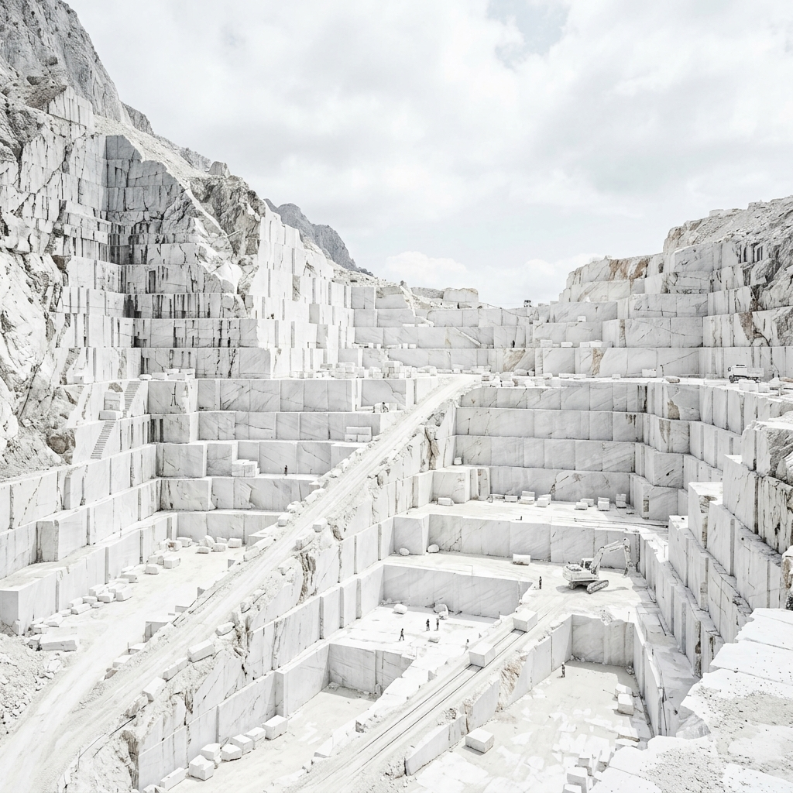

Non siamo semplici commercianti di lastre: siamo cavatori e maestri artigiani. La nostra cava a San Marco d’Alunzio è un bacino di estrazione controllato dove selezioniamo a monte i banchi di pietra più sani e spettacolari. Un processo che rispetta l'ambiente e valorizza la purezza della materia prima.
Dall'estrazione controllata del monte al collaudo finale in cantiere. Monitoriamo ogni singolo blocco per garantire la massima qualità strutturale ed estetica.
Utilizziamo tecnologie a 5 assi di ultima generazione per lavorazioni tridimensionali, scavi dal pieno e realizzazione di opere monumentali su misura.
Recupero delle acque di lavorazione e minimizzazione degli scarti. Operiamo nel pieno rispetto del paesaggio siciliano e delle sue risorse naturali.